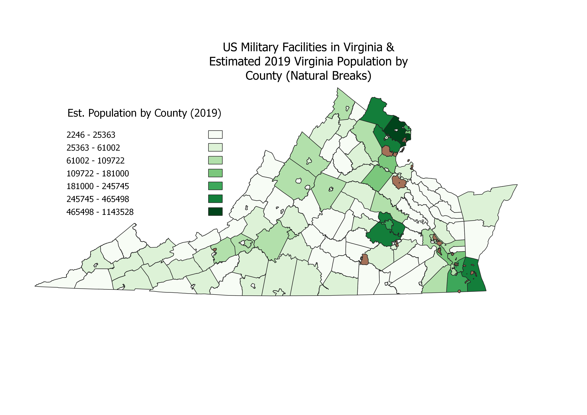
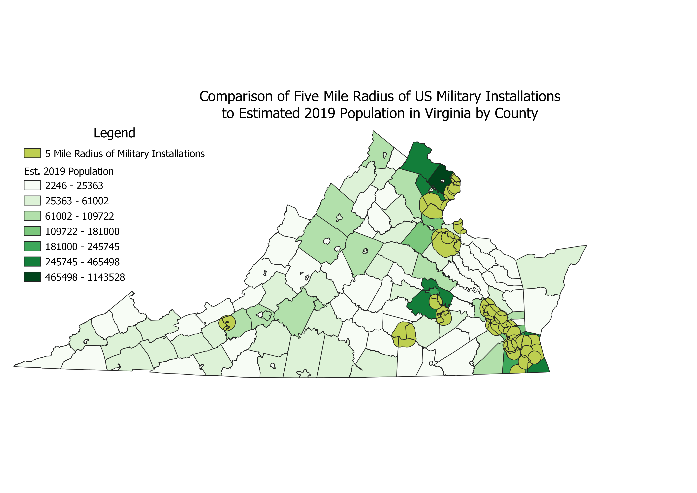

Homework 10: Geoprocessing Analysis of Virginia Population and US Military Installations
Stephen Wright
I came into this assignment looking to answer the question of whether Virginian counties containing military installations
see higher population than counties without. To do so, I first made a choropleth aligning Virginia's counties and independent cities
with 2019 population estimates produced by the University of Virginia, providing more recent data than the 2010 Census.
I then acquired shapefile data from the US Census Bureau showing all US military installations within the United States, which I then trimmed down
to only include those within Virginia. This, set against the choropleth, is represented in the first map below.
From there, I first used a buffer around all the military installations, set to five miles, considered a short commuting distance
by many Americans' standards. Using this buffer, I then used an intersect to indicate just what counties lie within this commute distance, and therefore
which counties potential workers or servicemembers at these installations may live in. Set against the choropleth, it can be seen that generally, the presence of
military installations does correlate to overall higher populations in a county, and aligning with previously observed biases in population
towards the north and eastern parts of the state.


Data used for this project
Link to Original Population Data
Link to Installation Data
Cleaned CSV Dataset
Link to ShapeFile (.gpkg)